물류관리사-1교시 (2018-07-21 기출문제)
1과목: 물류관리론
1. 21세기 물류 추세로 옳지 않은 것은?
- 세계를 연결하는 글로벌물류 추구
- 자사화물 중심의 수ㆍ배송물류 추구
- 고품격 고객맞춤 서비스물류 지향
- 3PL(3자물류) 또는 4PL(4자물류)로 발전
- 환경친화 및 안전 지향적 물류로 발전
(정답률: 77%)

2. 물류의 중요성이 부각되는 이유로 옳지 않은 것은?
- 주문횟수 감소 경향
- 고객욕구의 다양화와 고도화
- 운송시간과 비용의 상승
- 제조부문 원가절감의 한계
- 경쟁력 강화를 위하여 물류부문의 우위확보 필요
(정답률: 78%)
3. 물류비 절감효과에 관한 것이다. ( )에 들어갈 값은?
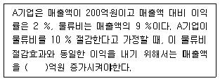
- 30
- 45
- 60
- 75
- 90
(정답률: 40%)
4. C물류기업의 물류비 계산을 위한 자료이다. 제품 A와 제품 B의 운송비 비율은? (단, 운송비 배부기준은 거리 × 중량을 사용함)
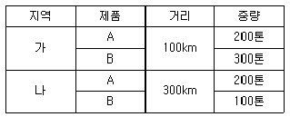
- 3 : 2
- 2 : 3
- 4 : 3
- 3 : 4
- 1 : 1
(정답률: 65%)
5. 물류의 기본적 기능과 가장 관계가 적은 것은?
- 형태적 조정
- 수량적 조정
- 가격적 조정
- 장소적 조정
- 시간적 조정
(정답률: 63%)
6. 물류비의 비목별 계산과정으로 옳은 것은?
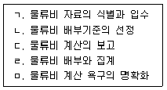
- ㄱ - ㄴ - ㄷ - ㄹ - ㅁ
- ㄱ - ㅁ - ㄴ - ㄹ - ㄷ
- ㄱ - ㅁ - ㄷ - ㄹ - ㄴ
- ㅁ - ㄱ - ㄴ - ㄷ - ㄹ
- ㅁ - ㄱ - ㄴ - ㄹ - ㄷ
(정답률: 49%)
7. 최근의 물류환경 변화에 관한 내용으로 옳지 않은 것은?
- 물류의 소량 다빈도화
- 환경문제를 중시하는 그린물류 부상
- 세계교역량의 급격한 감소
- 물류정보화의 진전
- 물류기술의 고도화
(정답률: 70%)
8. 기업물류비의 분류체계 중 기능별 물류비가 아닌 것은?
- 운송비
- 보관비
- 포장비
- 노무비
- 물류정보ㆍ관리비
(정답률: 69%)
9. 주문주기시간(order cycle time)에 관한 설명으로 옳지 않은 것은?
- 주문주기시간은 재고정책의 개선활동을 통하여 단축될 수 있다.
- 주문전달(order transmittal)은 적재서류 준비, 재고기록 갱신, 신용장 처리작업, 주문 확인 등의 활동이다.
- 재고 가용성(stock availability) 확보시간은 창고에 보유하고 있는 재고가 없을 때 생산지의 재고로부터 보충하는데 소요되는 시간이다.
- 주문인도(order delivery)는 주문품을 재고지점에서 고객에게 전달하는 활동이다.
- 오더피킹(order picking)은 재고로부터 주문품 인출ㆍ포장ㆍ혼재 작업과 관련된 활동이다.
(정답률: 45%)
10. 기업의 고객서비스 측정요소 중 거래 전(pre-transaction) 요소에 해당하는 것을 모두 고른 것은?
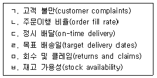
- ㄱ, ㄷ
- ㄹ, ㅂ
- ㄴ, ㄷ, ㄹ
- ㄷ, ㄹ, ㅁ
- ㄴ, ㄹ, ㅁ, ㅂ
(정답률: 58%)
11. 공급사슬의 수익관리전략이 유용한 경우가 아닌 것은?
- 고가의 상품으로 가격이 변하지 않을 경우
- 상품이 쉽게 변질되거나 상품의 가치가 하락될 경우
- 수요가 계절적이거나 특정 시기에 피크(peak)가 발생될 경우
- 상품을 대량단위와 소량단위로 계약할 수 있을 경우
- 상품의 가치가 다양한 시장세분화에 따라 달라질 경우
(정답률: 67%)
12. 공급사슬의 유연성이나 신속성을 달성하는 방법으로 옳지 않은 것은?
- 비용절감
- 직접주문 방식 도입
- 전략적 지연
- 파트너십 구축
- 모듈러 디자인
(정답률: 45%)
13. 제품수명주기 단계 중 성장기 전략의 특성이 아닌 것은?
- 장기적인 수요에 대비하여 유통망의 확대가 필요하나 정보가 충분하지 않아 물류계획을 수립하는데 어려움이 있다.
- 가격인하 경쟁에 대응하고 수요를 자극하기 위한 촉진비용이 많이 소요된다.
- 대량생산을 통한 가격인하로 시장의 규모가 확대된다.
- 제품에 대한 고객들의 관심이 높아지면서 제품가용성을 넓은 지역에 걸쳐 증가시키게 된다.
- 제품의 유통지역이 가장 광범위하며 제품가용성을 높이기 위하여 많은 수의 물류거점이 필요한 시기이다.
(정답률: 46%)
14. 물류관리에 관한 설명으로 옳지 않은 것은?
- 물류관리 활동은 고객서비스를 향상시키고 물류비용을 감소시키는 목표를 추구한다.
- 국제적인 경제환경이 변화하면서 물류관리에 대한 중요성이 증대되었다.
- 물류비용 절감을 통한 이익창출은 제3의 이익원으로 인식되고 있다.
- 제품의 수명주기가 길어지고 차별화된 제품생산의 요구 증대로 물류비용 절감의 필요성이 강조되었다.
- 원자재 및 부품의 조달, 구매상품의 보관, 완제품 유통도 물류관리의 대상이다.
(정답률: 61%)
15. 효율적 공급사슬(efficient supply chain)의 특징을 모두 고른 것은?
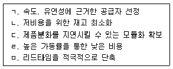
- ㄱ, ㄴ
- ㄱ, ㅁ
- ㄴ, ㄹ
- ㄱ, ㄷ, ㄹ
- ㄴ, ㄷ, ㅁ
(정답률: 28%)
16. 공급사슬관리(SCM)에 관한 설명으로 옳은 것은?
- 크로스도킹(cross docking)은 미국의 Amazon.com에서 최초로 개발하고 실행하여 성공을 거둔 공급사슬관리 기법이다.
- 채찍효과(bullwhip effect)는 공급사슬 내 각 주체 간의 전략적 파트너십 보다는 단순 계약 관계의 구축이 채찍효과 감소에 도움이 된다.
- CRM(Customer Relationship Management)은 솔루션의 운영을 통하여 공급자와 구매기업의 비즈니스 프로세스가 통합되어 모든 공급자들과 장기적인 협업관계 형성을 목표로 한다.
- CPFR(Collaborative Planning Forecasting and Replenishment)은 공장에서 제품을 완성하는 대신 시장 가까이로 제품의 완성을 지연시켜 소비자가 원하는 다양한 수요를 만족시키는 것이다.
- 대량고객화(mass customization)는 비용, 효율성 및 효과성을 희생시키지 않고 개별 고객들의 욕구를 파악하고 충족시키는 전략이다.
(정답률: 49%)
17. 공급사슬 취약성의 증가 요인을 모두 고른 것은?
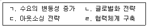
- ㄱ, ㄴ
- ㄴ, ㄹ
- ㄷ, ㄹ
- ㄱ, ㄴ, ㄷ
- ㄱ, ㄷ, ㄹ
(정답률: 48%)
18. 기업의 물류관리를 위한 전략적 계획과 전술적 계획을 비교한 것으로 옳지 않은 것은? (순서대로 구분, 전술적 계획, 전략적 계획)
- 의사결정의 종류 혁신성 일상성
- 의사결정의 환경 확실성 불확실성
- 계획주체 중간관리층 최고경영층
- 기간 중ㆍ단기적 장기적
- 관점 부서별 관점 전사적 관점
(정답률: 57%)
19. 물류공동화를 위한 전제조건으로 옳지 않은 것은?
- 일관 파렛트화 추진 및 업계의 통일전표 사용
- 자사 물류시스템과 외부 물류시스템의 연계
- 물류서비스 내용의 명확화 및 표준화
- 자사만의 독자적인 물류비 적용 기준의 확립
- 통일된 외장표시 및 표준 물류 심벌(symbol) 사용
(정답률: 73%)
20. 수요의 정성적 예측방법 중 제품과 서비스에 대하여 고객의 심리, 선호도, 구매동기 등을 조사하는 기법은?
- 인과모형법
- 시장조사법
- 지수평활법
- 회귀분석법
- 시계열분석법
(정답률: 69%)
21. 물류 및 마케팅에 관한 설명으로 옳지 않은 것은?
- 마케팅전략에는 제품전략, 가격전략, 유통전략, 촉진전략이 있다.
- 마케팅전략은 물류를 포함하여 상호 의존성 있는 마케팅믹스를 유기적으로 결합하여 경영전략의 일환으로 추진되고 있다.
- 물류는 마케팅믹스의 4P 중 제품(product)과 가장 밀접한 관계가 있다.
- 물류는 포괄적인 마케팅에 포함되면서 물류 자체의 마케팅활동을 실천해야 한다.
- 물류는 마케팅뿐만 아니라 산업공학적 측면, 무역학적 측면 등 광범위하게 확대되고 있다.
(정답률: 66%)
22. 최근에 급속히 성장하고 있는 무점포 소매상(non-store retailer)에 관한 설명으로 옳지 않은 것은?
- 인터넷 사용의 증가와 정보기술의 발달로 무점포 소매상 간의 경쟁이 심화되고 있다.
- 시간과 장소의 제한을 받지 않고 이용할 수 있다.
- 판매자와 소비자 간에 쌍방향 커뮤니케이션에 의한 1대1 마케팅도 가능하다.
- 물리적 공간의 제약을 받지 않고 전 세계를 대상으로 다양한 상품의 매매가 가능하다.
- 대표적인 형태는 카탈로그 쇼룸(Catalog Showrooms)이다.
(정답률: 66%)
23. 다음 설명에 해당하는 이론은?
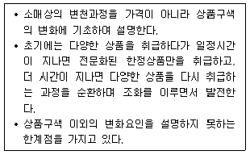
- 소매 수레바퀴 이론
- 소매 수명주기 이론
- 소매 아코디언 이론
- 소매 변증법 과정 이론
- 소매 자연도태 이론
(정답률: 57%)
24. 공동 수ㆍ배송 도입에 따른 기대효과로 옳지 않은 것은?
- 차량의 적재효율 향상
- 주변의 교통혼잡 증가
- 차량의 운행효율 향상
- 화물의 안정적인 확보
- 대형화물차에 의한 대량운송 확대
(정답률: 73%)
25. 물류의 영역적 분류에 관한 설명으로 옳은 것은?
- 조달물류는 생산업체에서 생산된 제품이 출하되어 판매창고에 보관될 때까지의 물류활동이다.
- 생산물류는 반환된 제품의 운반, 분류, 정리, 보관과 관련된 물류활동이다.
- 사내물류는 완제품이 출하되어 고객에게 인도될 때까지의 물류활동이다.
- 판매물류는 생산에 필요한 원자재나 부품이 협력회사나 도매업자로부터 제조업자의 자재창고에 운송되어 생산공정에 투입되기 전까지의 물류활동이다.
- 회수물류는 제품이나 상품의 판매활동에 부수적으로 발생하는 물류용기의 재사용에 관련된 물류활동이다.
(정답률: 66%)
26. 수송 리드타임이 3주이고 1회 발주량이 70개 일 때, ( )에 들어갈 값은? (단, 안전재고는 55개이다.)
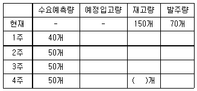
- 60
- 70
- 80
- 90
- 100
(정답률: 38%)
27. 바코드 시스템에 관한 설명으로 옳지 않은 것은?
- QR 코드는 2차원 바코드 중 하나이다.
- 바코드는 표준 바코드와 비표준 바코드로 나눌 수 있다.
- POS(Point of Sales)는 바코드를 이용하는 대표적인 소매관리시스템이다.
- 바코드는 보안에 취약하므로 포인트 적립, 할인 등의 수단에만 사용 가능하고 결제시스템에는 사용될 수 없다.
- EAN-14는 업체 간 거래단위인 물류단위, 주로 골판지박스에 사용되는 국제표준 물류 바코드이다.
(정답률: 68%)
28. 역물류(reverse logistics)와 관련이 없는 것은?
- 과잉재고 반품
- 폐기물류
- 회수물류
- 재주문(reorder)
- 운반용기 회수
(정답률: 71%)
29. 다음 화주기업의 수송부문 이산화탄소 추정 배출량(kg)은? (단, 이산화탄소 배출량(kg) = 연료사용량(L) × 이산화탄소배출계수(kg-CO2/L))
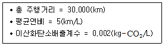
- 0.01
- 12
- 60
- 300
- 6,000
(정답률: 55%)
30. 물류정보시스템의 구성 요소가 아닌 것은?
- 수ㆍ배송관리 모듈
- 창고관리 모듈
- 생산관리 모듈
- 물류정보관리 모듈
- 주문처리 모듈
(정답률: 47%)
31. 주문처리시간에 영향을 미치는 요소에 관한 설명으로 옳은 것은?
- 주문처리 우선순위는 주문처리시간에 영향을 미치지 않는다.
- 순차처리(sequential processing)방식은 병렬처리(parallel processing)방식에 비해 총 주문처리시간이 단축될 수 있다.
- 주문을 모아서 일괄처리하면 주문처리비용 및 주문처리시간을 단축시킬 수 있다.
- 주문처리에서 오류가 발생하면 확인 및 재처리로 인해 주문처리시간이 증가하므로 오더필링(order filling)의 오류 발생을 줄이기 위해 노력해야 한다.
- 물류정보시스템을 활용하여 주문처리시간을 줄이면 초기 투자비용이 적게 든다.
(정답률: 54%)
32. 물류보안에 관한 설명으로 옳지 않은 것은?
- 물류보안제도는 적용범위에 따라 공급사슬의 특정 구간을 적용대상으로 하고 있는 제도와 공급사슬의 전 구간을 적용대상으로 하고 있는 제도로 나눌 수 있다.
- 최초의 물류보안제도는 20⑤년 11월 국제표준화기구(ISO)에서 발표한 ISO/PAS 28000 이다.
- 미국 관세국경보호청(Customs and Border Protection: CBP)은 9.11테러 이후 반러프로그램의 일환으로 CSI(Container Security Initiative)를 도입하였다.
- 24시간 전 적하목록 제출제도는 운송인이 선적항에서 선적 24시간 전에 화물적 하목록을 제출하도록 규정한 미국 관세국경보호청(CBP)의 규칙이다.
- 세계관세기구(WCO)는 무역의 안전 및 원활화를 조화시키는 표준협력으로 AEO(Authorized Economic Operator)를 도입하였다.
(정답률: 45%)
33. 물류정보시스템에 관한 설명으로 옳은 것은?
- ISBN(International Standard Book Number)은 출판물의 효율화를 위한 표시 제도로 음성, 영상 등 무형의 자료를 제외한 종이에 인쇄된 대부분의 출판물에 고유번호를 부여하는 것이다.
- GPS(Global Positioning System)는 인공위성으로 신호를 보낼 수는 없고 인공위성에서 보내는 신호를 받을 수만 있다.
- POS(Point of Sales)시스템의 단점은 바코드를 사용하여 상품의 정보를 읽어야하므로 인건비가 상승한다.
- ASP(Application Service Provider)는 지능형교통시스템(ITS)의 일종으로 교통여건, 도로상황 등 각종 교통정보를 운전자에게 신속하고 정확하게 제공한다.
- 전자문서교환(Electronic Data Interchange)은 인쇄된 문서를 자동화된 시스템을 통해 서로 교환하는 시스템으로 사무처리 비용 및 인건비 감소 등의 효과가 있다.
(정답률: 37%)
34. 제약이론(Theory of Constraints: TOC)에 관한 설명으로 옳지 않은 것은?
- 산출회계(throughput accounting)는 재고를 자산으로 평가한다.
- 골드랫(E.M. Goldratt)이 TOC이론을 제안하였다.
- TOC는 SCM에 응용할 수 있다.
- TOC는 제약을 찾아 집중적으로 개선하는 경영이론이다.
- DBR은 Drum, Buffer, Rope를 의미한다.
(정답률: 45%)
35. 물류시스템에 관한 설명으로 옳지 않은 것은?
- 생산지에서 소비지까지 연계되도록 물류시스템을 구축한다.
- 물류시스템의 목적은 보다 적은 물류비로 효용 창출을 극대화하는 최적 물류시스템을 구성하는 것이다.
- 물류시스템의 하부시스템으로는 운송시스템, 보관시스템, 하역시스템, 포장시스템, 정보시스템 등이 있다.
- 물류시스템과 관련된 개별비용은 상충되지 않는다.
- 물류시스템에서의 자원은 인적자원, 물적자원, 재무적 자원, 정보적 자원 등이다.
(정답률: 69%)
36. 다음 설명에 해당하는 물류조직의 유형은?
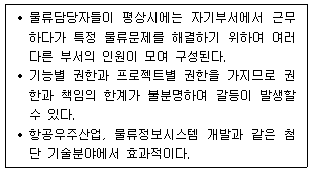
- 직능형 물류조직
- 라인ㆍ스태프형 물류조직
- 사업부형 물류조직
- 그리드형 물류조직
- 매트릭스형 물류조직
(정답률: 64%)
37. 6-시그마(6-σ)에 관한 설명으로 옳지 않은 것은?
- 시그마는 통계학에서 표준편차를 의미한다.
- 6-시그마 수준은 같은 실험을 100만회 시행했을 때 6회 정도 오류가 나는 수준이다.
- 6-시그마는 모토롤라의 해리(M.Harry)가 창안하였다.
- DMAIC란 정의(Define), 측정(Measure), 분석(Analyze), 개선(Improve), 관리(Control)를 의미한다.
- 6-시그마는 제조 부문뿐만 아니라 서비스 부문에도 적용할 수 있다.
(정답률: 58%)
38. 파렛트 풀 시스템(Pallet Pool System)의 운영방식에 관한 설명으로 옳은 것을 모두 고른 것은?
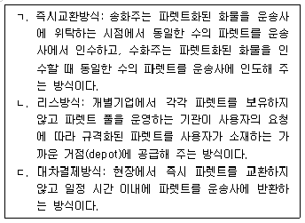
- ㄱ
- ㄴ
- ㄱ, ㄴ
- ㄴ, ㄷ
- ㄱ, ㄴ, ㄷ
(정답률: 58%)
39. 스마이키(E.W. Smykey)가 제창한 물류의 원칙인 7R원칙에 해당하지 않는 것은?
- Right Safety
- Right Quality
- Right Time
- Right Place
- Right Impression
(정답률: 56%)
40. 다음에 해당하는 물류합리화의 유형으로 옳게 짝지어진 것은?
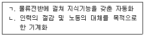
- ㄱ: 생력(省力)형, ㄴ: 생지능(省知能)형
- ㄱ: 비용(費用)절감형, ㄴ: 생지능(省知能)형
- ㄱ: 생지능(省知能)형, ㄴ: 생력(省力)형
- ㄱ: 생지능(省知能)형, ㄴ: 비용(費用)절감형
- ㄱ: 비용(費用)절감형, ㄴ: 생력(省力)형
(정답률: 62%)
2과목: 화물수송론
41. 운송시장의 환경변화에 관한 설명으로 옳지 않은 것은?
- 정보화 사회의 진전
- 글로벌 아웃소싱 시장의 확대
- 구매고객에 대한 서비스 수준 향상
- 전자상거래 증가
- 물류보안 및 환경 관련 규제 완화
(정답률: 62%)
42. 컨테이너에 관한 설명으로 옳지 않은 것은?
- 화물의 단위화를 목적으로 하는 운송용기로서 육상ㆍ해상ㆍ항공을 통한 화물운송에 있어 경제성, 신속성, 안정성의 이점을 갖고 있다.
- 물적유통 부문의 운송ㆍ보관ㆍ포장ㆍ하역 등의 전 과정을 일관운송할 수 있는 혁신적인 운송용기이다.
- 반복사용이 가능한 운송용기로서 신속한 하역작업을 가능하게 하고 이종운송수단 간 접속을 원활하게 하기 위해 고안된 화물수송용기이다.
- 화물을 운송하는 과정에서 재포장 없이 사용할 수 있도록 설계되어 취급이 용이하며, 해상운송방식에만 사용할 수 있도록 고안된 운송용기이다.
- 환적작업이 신속하게 이루어질 수 있는 장치를 구비하여야 하며, 화물의 적입 및 적출이 용이하도록 설계된 1m3이상의 용기이다.
(정답률: 66%)
43. 화물자동차운송의 장점으로 옳지 않은 것은?
- 근거리운송에 적합하다.
- 문전일관운송이 가능하다.
- 비교적 간단한 포장으로 운송이 가능하다.
- 단위포장으로 파렛트(Pallet)를 사용할 수 있다.
- 대량화물운송에 적합하다.
(정답률: 61%)
44. 운송비용 중 고정비 항목이 아닌 것은?
- 연료비
- 감가상각비
- 보험료
- 인건비
- 제세공과금
(정답률: 55%)
45. 운송수단의 선택기준으로 옳지 않은 것은?
- 화물종류
- 화물량
- 운송비용
- 종업원 수
- 운송거리
(정답률: 63%)
46. 화물운송의 비용 및 운임에 관한 설명으로 옳지 않은 것은?
- 정기선운송 시 무차별운임은 화물이나 화주, 장소에 따라 차별하지 않고 화물의 중량이나 용적을 기준으로 일률적으로 부과하는 운임이다.
- 정기선운송 시 혼재운임은 여러 화주의 화물을 혼재하여 하나의 운송단위로 만들어 운송될 때 부과되는 운임이다.
- 철도운송이나 해상운송의 경우, 대량화물을 운송할 때 단위비용이 낮아 항공운송이나 자동차운송보다 유리하다.
- 운송수단의 선정 시 운송비용과 재고유지비용을 고려해야 한다.
- 부정기선운송 시 부적운임은 선적하기로 계약했던 화물량보다 실선적량이 부족 한 경우 용선인이 계약물량에 대해 지불하는 운임이다.
(정답률: 37%)
47. 다음은 A기업의 화물운송 방식이다. 채트반(Chatban) 공식을 이용하여 운송할 때 그 결과에 관한 설명으로 옳지 않은 것은?
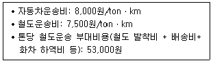
- A기업은 80∼100 km 구간에서 자동차운송이 유리하다.
- A기업은 100∼120 km 구간에서 철도운송이 유리하다.
- 100 km 지점에서 톤당 철도운송의 부대비용이 50,000원일 때, 자동차운송비와 철도운송비가 동일하다.
- A기업은 106 km 지점에서 자동차운송비와 철도운송비가 동일하다.
- A기업의 자동차운송의 경제적 효용거리는 106 km이다.
(정답률: 45%)
48. 특수화물운송 취급 장비 중 유압식 크레인의 용도 및 특징에 관한 설명으로 옳은 것은?
- 하이드로 크레인(Hydro Crane)이라고도 하며, 중ㆍ단거리 이동이 가능한 트럭위에 탑재시킨 장비이다.
- 상자형 화물실을 갖추고 있는 원동기부의 덮개가 운전실 앞쪽에 나와 있다.
- 화물실의 지붕이 없고, 옆판이 운전대와 일체로 되어 있다.
- 적재함 위에 회전하는 드럼을 싣고 화물을 뒤섞으면서 운행한다.
- 화물 적재장치(포크, 램)와 승강장치를 구비하고 있다.
(정답률: 35%)
49. 다음은 B기업의 2018년도 화물자동차 운행실적이다. 실차율, 적재율, 가동률이 모두 옳은 것은? (단, 소수점 둘째 자리에서 반올림) (순서대로 실차율, 적재율, 가동률)
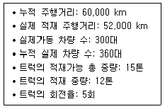
- 83.3%, 80.0%, 86.7%
- 83.3%, 86.7%, 80.0%
- 86.7%, 60.0%, 83.3%
- 86.7%, 80.0%, 83.3%
- 86.7%, 86.7%, 80.0%
(정답률: 41%)
50. 화물대를 기울여 적재물을 중력으로 내리는 적재함 구조의 전용특장차는?
- 덤프트럭(Dump Truck)
- 세미 트레일러 트럭(Semi-Trailer Truck)
- 롤러컨베이어(Roller Conveyor) 장치차량
- 롤러베드(Roller Bed) 장치차량
- 파렛트 레일(Pallet Rail) 장치차량
(정답률: 59%)
51. 다음에서 설명하는 차량은?
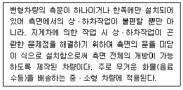
- 슬라이딩도어(Sliding Door) 차량
- 컨버터블(Convertible) 적재함 차량
- 셔터도어(Shutter Door) 차량
- 윙바디(Wing Body) 차량
- 폴트레일러(Pole Trailer) 차량
(정답률: 49%)
52. 화물정보망의 역할이 아닌 것은?
- 공차율의 감소
- 공산품 생산의 감소
- 운송시장의 투명성 제시
- 정보 수요자 중심의 시장으로 전환
- 운송효율의 제고
(정답률: 59%)
53. 화물운송실적신고는 화물자동차 운수사업자가 신고 대상 운송 또는 주선 실적을 정부에서 정한 일정 기준에 따라 의무적으로 관리하고 신고하여야 하는 제도이다. 실적신고 내용이 아닌 것은?
- 운송의뢰자 정보
- 계약내용
- 의뢰받은 화물을 재위탁한 경우 계약내용
- 배차내용
- 차량경로정보
(정답률: 38%)
54. 화물운송의 운임 결정요인에 해당하지 않는 것은?
- 축간거리(Wheel Base)
- 운송거리(Distance)
- 운송되는 화물의 크기(Volume)
- 밀도(Density)
- 적재성(Stowability)
(정답률: 64%)
55. 국제물류주선업자의 기능으로 옳은 것을 모두 고른 것은?
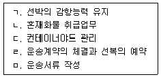
- ㄱ, ㄴ, ㄷ
- ㄱ, ㄷ, ㅁ
- ㄴ, ㄷ, ㄹ
- ㄴ, ㄹ, ㅁ
- ㄷ, ㄹ, ㅁ
(정답률: 60%)
56. 다음 수송문제의 모형에서 공급지 1∼3의 공급량은 각각 300, 500, 200이고, 수요지 1∼4의 수요량은 각각 200, 400, 100, 300이다. 공급지에서 수요지 간의 1단위 수송비용이 그림과 같을 때 제약 조건식으로 옳지 않은 것은? (단, Xij에서 X는 물량, i는 공급지, j는 수요지를 나타냄)
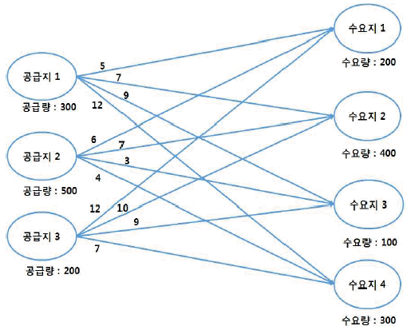
- X11+Z21+X31=200
- X14+X24+X34=400
- X11+X12+X13+X14=300
- X21+X22+X23+X24=500
- X31+X32+X33+X34=200
(정답률: 33%)
57. 유통센터에서 납품처 A, B까지의 배송시간은 각각 45분, 55분이며, 납품처A에서 납품처 B까지의 배송시간은 25분이다. 기존의 방식은 유통센터에서 납품처 A를 갔다 온 후 다시 납품처 B까지 갔다 오는 배송방식을 사용한다. 유통센터에서 납품처 A, B를 순차적으로 경유한 후 유통센터로 돌아오는 세이빙(Saving) 기법에 의한 배송 절약 시간은?
- 3시간 20분
- 3시간
- 2시간 5분
- 1시간 15분
- 55분
(정답률: 52%)
58. 다음 네트워크에서 출발지 S로부터 도착지 F까지 최단경로의 거리는 얼마인가? (단, 경로별 숫자는 km임)
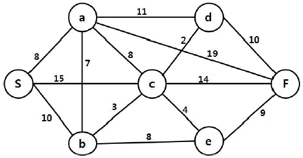
- 23 km
- 24 km
- 25 km
- 26 km
- 27 km
(정답률: 54%)
59. 최소비용법(Least-Cost Method)과 보겔추정법(Vogel's Approximation Method)을 적용하여 총 운송비용을 구할 때 각각의 방식에 따라 산출된 총운송비용의 차이는? (단, 공급지에서 수요지까지의 톤당 운송비는 각 셀의 우측 하단에 제시되어 있음)
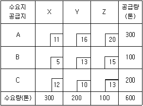
- 0
- 100
- 200
- 300
- 400
(정답률: 33%)
60. 수ㆍ배송시스템 설계 시 고려 요소에 해당하지 않는 것은?
- 리드타임
- 적재율
- 차량의 회전율
- 차량운행 대수
- 안전수요량
(정답률: 49%)
61. 수ㆍ배송시스템을 합000 546.00리적으로 설계하기 위한 요건과 분석기법에 관한 설명으로 옳지 않은 것은?
- 루트배송법은 다수의 소비자에게 소량 배송하기에 적합한 시스템으로 비교적 광범위한 지역을 대상으로 한다.
- TSP(Travelling Salesman Problem)는 차량이 지역 배송을 위해 배송센터를 출발하여 되돌아오기까지 소요되는 시간 또는 거리를 최소화하기 위한 기법이다.
- 다이어그램 배송(Diagram Delivery)은 집배구역 내에서 차량의 효율적 이용을 위하여 배송화물의 양이나 배송처의 거리, 수량, 배송시각, 도로 상황 등을 고려하여 미리 배송경로를 결정하여 배송하는 시스템이다.
- 변동 다이어그램은 과거 통계 또는 경험에 의존하여 주된 배송경로와 시각을 정해 두고 적시배달을 중시하는 배송시스템이다.
- 변동 다이어그램 방식으로 SWEEP, TSP, VSP 등이 있다.
(정답률: 38%)
62. 다음과 같은 네트워크에서 노드 S로부터 G까지 모든 노드들에 원유를 공급할 수 있는 가장 짧은 길이의 송유관 네트워크를 구축하고자 할 때, 송유관의 총 길이는 얼마인가? (단, 숫자는 두 노드 상의 거리이며, 단위는 km임)
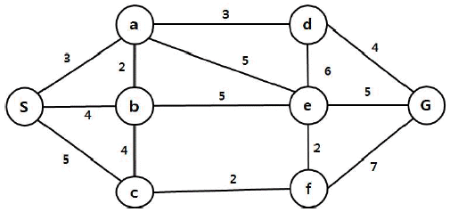
- 18 km
- 19 km
- 20 km
- 21 km
- 22 km
(정답률: 25%)
63. 다음 그림에서 숫자는 인접한 노드 간의 용량을 의미한다. 현재 노드 간(c → d)의 용량은 7이다. 만약, 노드 간(c → d)의 용량이 7에서 2로 감소한다고 가정할 때, S에서 F까지의 최대 유량의 감소분은?
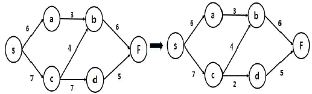
- 1
- 2
- 3
- 4
- 5
(정답률: 39%)
64. 다음과 같은 운송조건의 수송표가 주어졌을 때 북서코너법을 이용한 총 수송비는 얼마인가? (단, 각 셀은 단위당 수송비용임)
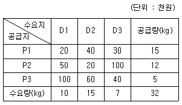
- 900,000원
- 1,000,000원
- 1,100,000원
- 1,200,000원
- 1,300,000원
(정답률: 49%)
65. 택배 표준약관(공정거래위원회 표준약관 제10026호)의 운송물의 수탁거절 사유로 옳지 않은 것은?
- 고객이 제7조 제2항의 규정에 의한 청구나 승낙을 거절하여 운송에 적합한 포장이 되지 않은 경우
- 고객이 제9조 제1항의 규정에 의한 확인을 거절하거나 운송물의 종류와 수량이 운송장에 기재된 것과 다른 경우
- 운송물 1포장의 가액이 300만원을 초과하는 경우
- 운송물의 인도예정일(시)에 운송이 가능한 경우
- 운송물이 현금, 카드, 어음, 수표, 유가증권 등 현금화가 가능한 물건인 경우
(정답률: 61%)
66. 소화물일관운송의 특징으로 옳은 것을 모두 고른 것은?
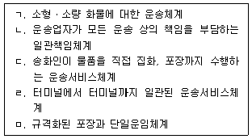
- ㄱ, ㄴ, ㄷ
- ㄱ, ㄴ, ㅁ
- ㄱ, ㄴ, ㄷ, ㄹ
- ㄱ, ㄷ, ㄹ, ㅁ
- ㄴ, ㄷ, ㄹ, ㅁ
(정답률: 35%)
67. 다음과 같은 특징을 가진 택배운송시스템은?
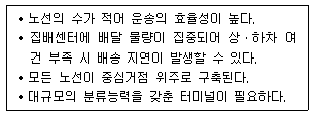
- Milk Run 시스템
- Point to Point 시스템
- Hub & Spoke 시스템
- 절충형 혼합식 네트워크 방식
- 프레이트 라이너 방식
(정답률: 58%)
68. 택배 표준약관(공정거래위원회 표준약관 제10026호)에 관한 내용으로 옳은 것은?
- 고객이 운송장에 손해배상한도액을 기재하지 않았을 경우 한도액은 50만원이 적용되고, 운송물의 가액에 따라 할증요금을 지급하는 경우에는 각 운송가액 구간별 평균가액이 적용된다.
- 운송물이 포장당 50만원을 초과하거나 운송상 특별한 주의를 요하는 것일 때는 따로 추가 요금을 청구할 수 있다.
- 운송장에 인도예정일의 기재가 없는 경우에는 운송장에 기재된 운송물의 수탁일로부터 인도예정 장소에 따라 일반 지역 1일, 도서, 산간벽지 3일로 한다.
- 운송물의 멸실, 현저한 훼손 또는 연착이 천재지변 기타 불가항력적인 사유 또는 고객의 책임 없는 사유로 인한 것인 때에는 사업자는 운임을 청구하지 못하고 통지ㆍ최고ㆍ운송물의 처분 등에 소요되는 비용을 청구한다.
- 운송물의 일부 멸실 또는 훼손에 대한 사업자의 손해배상책임은 수화인이 운송물을 수령한 날로부터 21일 이내에 그 일부 멸실 또는 훼손에 대한 사실을 사업자에게 통지를 발송하지 아니하면 소멸한다.
(정답률: 41%)
69. 국내 철도화물 운임체계에 관한 설명으로 옳은 것은?
- 철도화물 운임은 별도의 할인제도를 운영하고 있지 않다.
- 철도화물 운임체계는 일반화물, 특수화물로 구분하여 운영하고 있다.
- 일반화물 운임은 운송거리(km) × 운임단가(운임/km) × 화물중량(톤)으로 산정한다.
- 일반화물의 최저기본운임은 사용화차의 최대 적재중량에 대한 10 km에 해당하는 운임이다.
- 1 km 미만의 거리와 1톤 미만의 일반화물은 실제 거리와 중량으로 계산한다.
(정답률: 57%)
70. 철도화물운송 방식에 관한 설명으로 옳은 것은?
- Kangaroo: 철도의 일정구간을 정기적으로 고속운행하는 열차를 편성하여 운송하는 방식이다.
- TOFC: 화차에 컨테이너만을 적재하는 방식이다.
- Freight Liner: 트레일러 바퀴가 화차에 접지되는 부분을 경사진 요철 형태로 만들어 적재높이가 낮아지도록 하여 운송하는 방식이다.
- COFC: 화차 위에 컨테이너를 적재한 트레일러를 적재한 채로 운송을 한 후 목적지에 도착하여 트레일러를 견인장비로 견인, 하차한 후 트랙터와 연결하여 운송하는 방식이다.
- Piggy Back: 화차 위에 화물을 적재한 트럭 등을 적재한 상태로 운송하는 방식이다.
(정답률: 56%)
71. 철도운송 서비스 형태에 관한 설명으로 옳지 않은 것은?
- Block Train: 스위칭 야드(Switching Yard)를 이용하지 않고 철도화물역 또는 터미널 간을 직행 운행하는 방식이다.
- Shuttle Train: 철도역 또는 터미널에서의 화차조성비용을 줄이기 위해 화차의 수와 타입이 고정되며 출발지 →목적지 → 출발지를 연결하는 루프형 구간에서 서비스를 제공하는 방식이다.
- Single-Wagon Train: 복수의 중간역 또는 터미널을 거치면서 운행하는 방식이다.
- Train Ferry: 중ㆍ단거리 수송이나 소규모 터미널에서 이용할 수 있는 소형 열차서비스 방식이다.
- Y-Shuttle Train: 한 개의 중간터미널을 거치는 것을 제외하고는 셔틀트레인(Shuttle Train)과 같은 형태의 서비스를 제공하는 방식이다.
(정답률: 35%)
72. 철도운송의 장점으로 옳지 않은 것은?
- 화차의 소재 관리가 용이하다.
- 대량화물을 원거리수송할 경우 화물자동차운송에 비해 저렴하고 경제적이다.
- 궤도수송이기 때문에 사고율이 낮고 안전도가 높다.
- 화물자동차에 비해 매연발생이 적다.
- 기후 상황에 크게 영향을 받지 않으며 계획적인 운송이 가능하다.
(정답률: 53%)
73. 항공화물운송대리점의 업무에 해당하지 않는 것은?
- 수출입항공화물의 유치 및 계약체결
- 내륙운송주선
- 항공운항 스케줄 관리
- 수출입통관절차 대행
- 항공화물 부보업무
(정답률: 44%)
74. 항공화물운송 운임에 관한 설명으로 옳은 것을 모두 고른 것은?
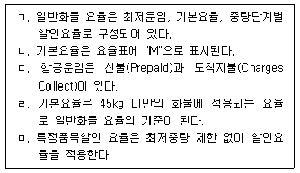
- ㄱ, ㄴ, ㄷ
- ㄱ, ㄴ, ㄹ
- ㄱ, ㄷ, ㅁ
- ㄱ, ㄷ, ㄹ
- ㄴ, ㄷ, ㄹ
(정답률: 40%)
75. 항공화물운송장에 관한 설명으로 옳지 않은 것은?
- 운송 위탁된 화물을 접수했다는 수령증이다.
- 송화인과의 운송계약 체결에 대한 문서증명으로 사용할 수 없다.
- 화물과 함께 목적지로 보내 수화인의 운임 및 요금 계산 근거를 제공한다.
- 세관에 대한 수출입 신고자료 또는 통관자료로 사용된다.
- 화물 취급, 중계, 배송과 같은 운송 지침의 기능도 수행한다.
(정답률: 54%)
76. 해상운송에서 정기선운송과 부정기선운송에 관한 설명으로 옳은 것은?
- 해상운송계약 체결의 증거로서 정기선운송은 선하증권(Bill of Lading)을, 부정기선운송은 용선계약서(Charter Party)를 사용한다.
- 정기선운송은 벌크화물을 운송하고, 부정기선운송은 컨테이너화물을 운송한다.
- 정기선운송인은 사적 계약운송인의 역할을, 부정기선운송인은 공공 일반운송인의 역할을 수행한다.
- 정기선운송 운임은 수요와 공급에 의해 결정되고, 부정기선운송 운임은 공표운임(Tariff)에 의해 결정된다.
- 정기선운송의 하역비 부담조건은 FI, FO, FIO 등이 있고, 부정기선은 Berth term에 의해 결정된다.
(정답률: 54%)
77. <보기 1>의 부정기선의 계약에 따른 운항형태에 대한 설명을 <보기 2>에서 찾아 모두 바르게 연결한 것은?
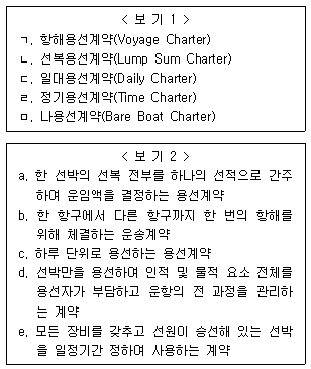
- ㄱ - a, ㄴ - c, ㄷ- b, ㄹ - e, ㅁ- d
- ㄱ- a, ㄴ - b, ㄷ- c, ㄹ- e, ㅁ - d
- ㄱ - b, ㄴ - a, ㄷ - c, ㄹ - e, ㅁ- d
- ㄱ- b, ㄴ- c, ㄷ- a, ㄹ- d, ㅁ- e
- ㄱ - b, ㄴ - c, ㄷ - e, ㄹ - a, ㅁ- d
(정답률: 49%)
78. 선박의 항해에 필요한 연료유, 식수 등의 중량을 제외한 적재할 수 있는 화물의 최대 중량으로 용선료의 기준이 되는 선박 톤수는?
- 총톤수(Gross Tonnage）
- 순톤수(Net Tonnage)
- 재화중량톤수(Dead Weight Tonnage)
- 배수톤수(Displacement Tonnage)
- 재화용적톤수(Measurement Tonnage)
(정답률: 45%)
79. 선화증권에 관한 설명으로 옳지 않은 것은?
- 기명식 선화증권은 선화증권의 수화인란에 수화인의 성명이 기재되어 있는 선화증권을 말한다.
- 선화증권은 운송계약서는 아니지만 운송인과 송화인 간에 운송계약이 체결되었음을 추정하게 하는 증거증권의 기능을 가진다.
- 기명식 선화증권은 화물의 전매나 유통이 자유롭다.
- 지시식 선화증권은 선화증권의 수화인란에 수화인의 성명이 명시되어 있지 않고 ‘to order of’로 표시된 선화증권을 말한다.
- 기명식 선화증권은 선화증권에 배서금지 문언이 없으면 배서양도는 가능하지만, 기명된 당사자만이 화물을 인수할 수 있다.
(정답률: 50%)
80. 해운정책에 관한 설명으로 옳지 않은 것은?
- 카보타지(Cabotage)는 해운자유주의 정책의 근본 개념이라 할 수 있으며 공공단체, 정부 또는 대리인의 개입 없이 상선은 운임시장에 의해 운항되는 정책이다.
- 해운자유화의 의의는 선박에 게양되는 국기에 상관없이 해상운송의 자유 및 공정한 경쟁원칙을 적용하는 데 있다.
- 해운자유주의 정책에서 화주는 국적선이든 외국적선이든 간에 운송인 선정의 자유를 갖는다.
- 해운보호주의는 외부경쟁으로부터 국내 해운산업을 보호하기 위한 정책이다.
- 해운의 국가통제란 정부가 직접 해운에 개입하는 것을 말하며 계획조선제도가 대표적인 예이다.
(정답률: 35%)
3과목: 국제물류론
81. 국내물류와 국제물류에 대한 비교로 옳지 않은 것은?
- 국내물류에 비해 국제물류는 각국의 언어ㆍ사회ㆍ문화ㆍ정치ㆍ법적 측면에서 영향을 받게 된다.
- 국내물류에 비해 국제물류는 대금결제, 선적, 통관 등의 복잡한 서류절차를 필요로 한다.
- 국내물류에 비해 국제물류는 일반적으로 운송비용이 높다.
- 국내물류에 비해 국제물류는 운송과정에서 위험요소가 적다.
- 국내물류에 비해 국제물류의 리드타임이 길다.
(정답률: 54%)
82. 한국 정부가 추진하고 있는 '신북방정책'에 관한 설명으로 옳지 않은 것은?
- 유라시아 지역 국가들과 상호협력을 통해 미래 성장동력을 창출하는 것이 목적중 하나이다.
- 한ㆍ러 협력사업으로 조선, 항만, 철도 등 9개 분야 ‘나인 브릿지(9-Bridge)’ 전략을 추진하고 있다.
- 신북방정책의 지리적 범위에는 러시아, 중앙아시아, CIS국가 그리고 중국 동북3성이 포함된다.
- 한국은 TCR과 TSR 연결을 위해 요구되는 국제철도협력기구(OSJD)에 가입하지 못한 상태이다.
- 항만분야는 극동 러시아지역 항만 현대화가 주요 사업이다.
(정답률: 53%)
83. 주요국의 글로벌 물류정책으로 옳지 않은 것은?
- 중국은 일대일로 계획을 통해 해상과 육상 실크로드를 구축하여 유라시아 국가들과의 경제협력을 추진하고 있다.
- 일본은 컨테이너 해운산업 구조조정을 위하여 국영 해운기업의 인수합병을 실행하였다.
- 한국은 인천국제공항 확장과 배후단지를 개발하여 동북아 허브공항 육성전략을 실행하였다.
- 아랍에미리트는 DPW(Dubai Port World)를 설립하고 M&A를 통한 글로벌 터미널 운영전략을 실행하였다.
- 싱가포르는 국영기업인 PSA(Port of Singapore Authority)를 통해 해외 항만개발 사업을 실행하고 있다.
(정답률: 43%)
84. 최근 국제물류 환경변화로 옳은 것은?
- 제품의 수명주기가 길어짐에 따라 신속한 국제운송이 요구되고 있다.
- 환경친화적 물류관리를 위하여 세계적으로 환경오염에 대한 규제가 완화되고 있다.
- 위치기반기술의 발전으로 인하여 실시간 화물추적과 운행관리가 가능해졌다.
- 기업들은 SCM체제를 구축하여 재고 증대를 통한 빠른 고객대응을 추구하게 되었다.
- e-Logistics의 활용으로 물류 가시성이 낮아지고 있다.
(정답률: 52%)
85. 글로벌 소싱에 관한 설명으로 옳지 않은 것은?
- 기업들은 글로벌 소싱을 활용하여 공급사슬을 확대할 수 있다.
- 구매가격을 낮추기 위하여 외국의 공급자로부터 자재와 부품을 구매할 수 있다.
- 글로벌 소싱은 품질과 납기 등을 개선시킬 기회가 될 수 있다.
- 해외공급자 파악, 선정, 평가 등의 추가적인 노력이 요구된다.
- 정보통신기술의 발달로 글로벌 구매 시 국내 구매와 동일한 절차로 자재를 획득할 수 있다.
(정답률: 50%)
86. 북극해항로(Northern Sea Route)에 관한 설명으로 옳지 않은 것은?
- 북극해항로를 이용할 경우 수에즈운하를 이용하는 항로에 비해 운항거리와 운항시간을 단축하는 효과가 있다.
- 북극해항로는 캐나다 북부해안을 따라 운항하는 북동항로를 일컫는다.
- 북극해항로는 얕은 수심으로 인해 초대형 컨테이너선 운항에 어려움이 있다.
- 북극해항로의 상업적 이용을 위해서는 해당지역의 항만시설 개선과 쇄빙선 이용료의 인하 등이 필요하다.
- 북극해항로는 북극지역의 광물 및 에너지자원 활용차원에서 초기에는 부정기선 위주로 활용될 전망이다.
(정답률: 36%)
87. 항만 내에서 발생하는 서비스의 대가로 화주가 부담해야 하는 비용은?
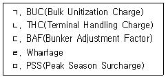
- ㄱ, ㄴ
- ㄱ, ㄹ
- ㄴ, ㄹ
- ㄴ, ㅁ
- ㄷ, ㄹ
(정답률: 38%)
88. 해상운송 관련 국제기구에 관한 설명으로 옳은 것은?
- ISF: 해사법과 해사관행 및 관습의 통일을 위해 설립되었다.
- FIATA: 선주의 이익 증진을 위하여 국제적인 문제에 대해 의견을 교환하고 정책을 수립하기 위해 설립되었다.
- BIMCO: 국제상거래법의 단계적인 조화와 통일을 목적으로 설립되었다.
- CMI: 국제해운의 안전성 확보를 위하여 1944년 시카고 조약으로 설립이 합의되었다.
- IMO: 정부간 해사기술의 상호협력, 해사안전 및 해양오염방지대책 수립 등을 목적으로 설립되었다.
(정답률: 38%)
89. 국제해상운송 서비스의 특성으로 옳지 않은 것은?
- 해상운송은 대량수송에 적합하며 대체로 원거리수송에 이용된다.
- 적재되지 않은 컨테이너선의 미사용 선복이나, 용선되지 못하고 계선 중인 부정기선의 선복은 항만당국으로부터 보상받을 수 있다.
- 서비스 제공과정에서 화주의 참여기회가 적다.
- 타 운송수단에 비하여 단위거리 당 운송비가 저렴하다.
- 수출지원 산업으로 국제무역을 촉진시키는 특성을 가진다.
(정답률: 37%)
90. 국제항공기구에 관한 설명으로 옳은 것은?
- ACI는 국제항공운송협회로 1945년 쿠바의 하바나에서 세계항공사회의를 개최함으로써 설립되었다.
- ICAO는 시카고조약의 기본원칙인 기회균등을 기반으로 하여 국제항공운송의 건전한 발전을 도모하기 위해 설립된 기구이다.
- IATA는 국제항공의 안전 및 발전을 목적으로 하여 각국 정부의 국제협력기관으로서 설립되었다.
- FAI는 1926년 설립된 국가별 운송주선인협회와 개별운송주선인으로 구성된 국제민간기구로서 전세계적인 운송주선인의 연합체이다.
- ICAO의 회원은 IATA회원국의 국적을 가진 항공사만 가능하다.
(정답률: 38%)
91. 정기선 할증운임에 관한 설명으로 옳지 않은 것은?
- Bulky/Lengthy Surcharge: 본선 출항전까지 양륙항을 지정하지 못하거나 양륙항이 복수일 때 항만 수 증가에 비례하여 부과된다.
- Port Congestion Surcharge: 양륙항의 체선이 심해 장기간의 정박이 요구되어 선사에 손해가 발생할 때 부과된다.
- Heavy Cargo Surcharge: 초과 중량에 따라 기본운임에 가산하여 부과된다.
- Bunker Adjustment Factor: 선박의 주연료인 벙커유가격 인상으로 발생하는 손실을 보전하기 위해 부과된다.
- Currency Adjustment Factor: 환율변동에 따른 환차손을 보전하기 위해 부과된다.
(정답률: 46%)
92. GENCON Charter Party에 명시된 체선료 조항의 내용으로 옳지 않은 것은?
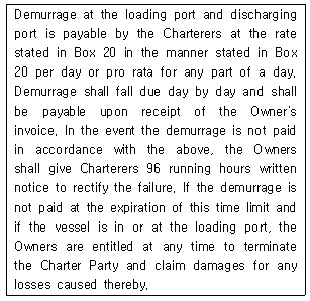
- 선적항 및 양륙항에서의 체선료는 1일당 또는 1일 미만의 경우에는 그 비율에 따라 20란(Box 20)에 표시된 체선요율과 지급 방법에 의거해 용선자가 지급한다.
- 체선료는 매일 계상하고 선주로부터 청구서 수령시 지급한다.
- 체선료가 지급되지 않을 경우 선주는 그 불이행을 시정하기 위해 용선자에게 연속 96시간의 서면통지를 한다.
- 체선료가 96시간내에 지급되지 않는 경우 선주는 용선계약자의 동의하에 용선계약을 종료시킬 수 있지만 그에 따른 손해배상은 청구할 수 없다.
- 이 경우 용선계약을 종료시킬 수 있는 권리는 선적항에서 발생가능하다.
(정답률: 42%)
93. 항공운송과 관련되는 국제규범으로 옳은 것은?
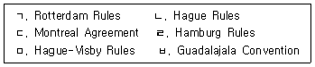
- ㄱ, ㄷ
- ㄴ, ㄷ
- ㄴ, ㅂ
- ㄷ, ㅂ
- ㄹ, ㅁ
(정답률: 45%)
94. 한국, 일본 등 극동지역에서 파나마운하를 통과하여 미국 동부지역으로 해상 운송한 후 미국 내륙지점까지 운송하는 복합운송방식은?
- Reversed Interior Point Intermodal
- Overland Common Point
- Canada Land Bridge
- American Land Bridge
- Mini Land Bridge
(정답률: 40%)
95. 국제복합운송에 관한 설명으로 옳지 않은 것은?
- 국제복합운송이란 국가 간 두 가지 이상의 운송수단을 이용하여 운송하는 것이다.
- 국제복합운송은 컨테이너의 등장과 운송기술의 발달로 인해 비약적으로 발전하였다.
- 국제복합운송의 기본요건은 일관선하증권(through B/L), 일관운임(through rate), 단일운송인책임(single carrier's liability) 등이다.
- NVOCC는 자신이 직접 선박을 소유하고 자기명의와 책임으로 복합운송을 수행하는 운송인이다.
- 계약운송인형 국제물류주선업자는 운송수단을 직접 보유하지 않으면서 운송의 주체자로서의 역할과 책임을 다하는 운송인을 말한다.
(정답률: 57%)
96. 철도에 의한 컨테이너 운송방식이 아닌 것은?
- COFC
- TOFC
- Double stack train
- Rail car service
- Semi-trailer combination
(정답률: 43%)
97. 컨테이너 운송과 관련된 국제협약이 옳게 연결된 것은?
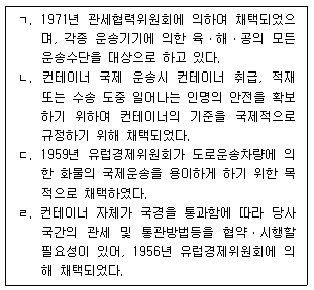
- ㄱ: CCC협약, ㄴ: TIR협약, ㄷ: ITI협약, ㄹ: CSC협약
- ㄱ: TIR협약, ㄴ: CCC협약, ㄷ: CSC협약, ㄹ: ITI협약
- ㄱ: ITI협약, ㄴ: CSC협약, ㄷ: CCC협약, ㄹ: TIR협약
- ㄱ: TIR협약, ㄴ: CSC협약, ㄷ: CCC협약, ㄹ: ITI협약
- ㄱ: ITI협약, ㄴ: CSC협약, ㄷ: TIR협약, ㄹ: CCC협약
(정답률: 45%)
98. 컨테이너화물 수출선적절차에 필요한 서류를 순서대로 나열한 것은?
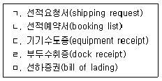
- ㄱ - ㄴ-ㄷ -ㄹ- ㅁ
- ㄱ-ㄹ -ㄴ - ㄷ -ㅁ
- ㄴ - ㄱ-ㄷ -ㄹ - ㅁ
- ㄴ - ㄷ-ㄹ -ㄱ- ㅁ
- ㄷ-ㄴ -ㄱ - ㄹ -ㅁ
(정답률: 47%)
99. TSR(Trans Siberian Railway)에 관한 설명으로 옳지 않은 것은?
- 이 서비스를 이용할 경우 부산에서 로테르담까지의 운송거리가 수에즈운하를 경유하는 올 워터 서비스(All Water Service)에 비해 단축될 수 있다.
- 우즈베키스탄, 투르크메니스탄 등 항만이 없는 내륙국가와의 국제운송에도 유용하다.
- SLB(Siberian Land Bridge)라고도 불리며, 한국을 비롯한 극동지역과 유럽대륙간의 Sea & Air 복합운송시스템이다.
- 극동지역과 유럽간의 대외교역 불균형에 따른 컨테이너 수급문제와 동절기의 결빙문제가 발전에 걸림돌이 되고 있다.
- 러시아 철도의 궤도 폭과 유럽 철도의 궤도 폭이 달라 환적해야 하는 불편이 있다.
(정답률: 49%)
100. 선하증권 이면에 표기되어 있는 다음 약관에 해당하는 것은?
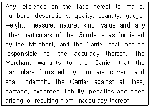
- New Jason Clause
- Both to Blame Clause
- Unknown Clause
- Paramount Clause
- Lien Clause
(정답률: 33%)
101. 선적서류보다 물품이 먼저 목적지에 도착하는 경우, 수입화주가 화물을 조기에 인수하기 위해 사용할 수 있는 서류는?
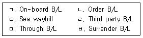
- ㄱ, ㄴ
- ㄱ, ㅂ
- ㄷ, ㄹ
- ㄷ, ㅂ
- ㄹ, ㅁ
(정답률: 32%)
102. AWB의 전면약관에는 표기되어 있으나, B/L 전면약관에는 없는 기재항목으로만 나열된 것은?
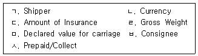
- ㄱ, ㄴ, ㄷ
- ㄴ, ㄷ, ㅁ
- ㄴ, ㄹ, ㅂ
- ㄷ, ㅁ, ㅂ
- ㄹ, ㅁ, ㅅ
(정답률: 32%)
103. 국제물류주선업자가 소량의 LCL화물을 집화하여 FCL화물로 만드는 과정을 뜻하는 용어는?
- Clearance
- Consolidation
- Tariff filing
- Import inspection
- Quarantine
(정답률: 54%)
104. 복합운송증권에 관한 설명으로 옳지 않은 것은?
- 복합운송증권이 비유통성증권으로 발행된 경우에는 지명된 수화인을 증권에 기재하여야 한다.
- UN 국제물품복합운송조약에서는 복합운송서류를 ‘Multimodal Transport Document’라고 한다.
- 복합운송인이 화주에게 발행하며, 계약의 내용이나 운송조건 및 운송화물의 수령을 증명하는 서류이다.
- 컨테이너 화물에 대한 복합운송증권은 FIATA의 표준양식을 사용하여 발행될 수 없다.
- 유통성 복합운송증권은 수하인이 배서 또는 교부하여 화물을 처분할 수 있는 권리가 부여된 유가증권이다.
(정답률: 42%)
1⑤. 아래 하역기기에 관한 설명으로 옳지 않은 것은?
- Gantry Crane 또는 Container Crane으로 불린다.
- 컨테이너터미널 내의 하역기기 중 가장 크다.
- 타이어로 된 바퀴가 설치되어 있어 컨테이너 터미널 내 자유로운 이동이 가능하다.
- 컨테이너의 본선 작업에 사용되는 하역 장비이다.
- 컨테이너 선박의 대형화에 따라 아웃리치(Outreach)가 길어지는 추세이다.
(정답률: 52%)
106. 최근 선박대형화가 해운항만에 미치는 영향으로 옳지 않은 것은?
- 하역장비의 대형화
- Hub & Spoke 운송시스템의 감소
- 대형선박 투입으로 기항항만 수 감소
- 항만생산성 제고 압력 증대
- 항만운영에 있어서 자본투입 증가
(정답률: 47%)
107. ( )에 해당하는 물류보안제도는?
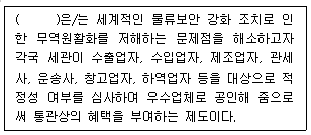
- ISPS Code
- CSI
- C-TPAT
- ISO 28000
- AEO
(정답률: 43%)
108. 컨테이너터미널 구성요소에 관한 명칭과 설명으로 옳지 않은 것은?
- 안벽: 선박이 접안하기 위한 계선시설
- 마샬링야드: 안벽에 접한 부분으로 안벽 크레인이 주행할 수 있도록 레일이 설치된 장소
- 컨테이너야드: 수출입 컨테이너의 반입, 장치, 보관이 이루어지는 장소
- 컨트롤타워: 컨테이너터미널 전체 작업을 관리ㆍ감독하는 장소
- 컨테이너화물조작장: 컨테이너 화물의 혼재작업이 이루어지는 장소
(정답률: 50%)
109. 컨테이너터미널에서 사용되는 장비에 관한 설명으로 옳지 않은 것은?
- 스트래들캐리어: 컨테이너를 양각 사이에 끼워 놓고 운송하거나 하역하는 장비로 완전자동화터미널에 적합한 장비이다.
- 야드트랙터: 에이프런과 컨테이너 야드간 컨테이너의 이동을 위한 장비로 통상야드 샤시와 결합하여 사용한다.
- 트랜스퍼크레인: 컨테이너 야드 내에서 컨테이너의 적재나 이동에 사용하는 장비로 RTGC와 RMGC가 대표적이다.
- 포크리프트: CFS에서 컨테이너에 화물을 적입ㆍ적출할 때 사용하는 장비이다.
- 리치스태커: 컨테이너를 적양하할 때 사용하고 이송작업도 가능한 장비이다.
(정답률: 25%)
110. 최근 세계적으로 GDP 대비 컨테이너 해상물동량 증가세가 둔화되고 있는 원인으로 옳지 않은 것은?
- 서비스 중심으로 산업구조 변화
- 보호무역주의의 심화
- 컨테이너화(containerization)의 둔화
- 3D 프린팅 기술의 도입
- 생산의 오프쇼어링(offshoring) 증가
(정답률: 25%)
111. 한국의 내륙컨테이너기지(ICD)에서 수행하고 있지 않는 기능은?
- 통관
- 혼재
- 보관
- 제조
- 철도운송
(정답률: 48%)
112. 해상보험에서 적하보험 부가조건으로 옳지 않은 것은?
- TPND
- JWOB
- RFWD
- Sweat & Heating
- Refrigerating Machinery
(정답률: 32%)
113. Marine Insurance Act(1906)에 규정된 용어의 설명이다. ( ) 안에 들어갈 용어들이 옳게 나열된 것은?
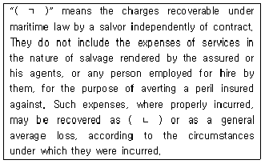
- ㄱ: Actual total loss ㄴ: sue and labour charge
- ㄱ: Particular charges ㄴ: actual total loss
- ㄱ: Salvage charges ㄴ: particular charges
- ㄱ: Salvage charges ㄴ: constructive total loss
- ㄱ: Actual total loss ㄴ: constructive total loss
(정답률: 23%)
114. Institute Cargo Clause(C)(2009)에서 담보하는 위험이 아닌 것은?
- 추락손
- 화재ㆍ폭발
- 육상운송용구의 전복ㆍ탈선
- 피난항에서의 화물의 양하
- 본선ㆍ부선의 좌초ㆍ교사ㆍ침몰ㆍ전복
(정답률: 38%)
115. New York Convention(1958)의 일부이다. ( )에 들어갈 용어는?
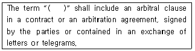
- agreement in writing
- arbitral authority
- intercession
- signatures and ratifications
- declarations and notifications
(정답률: 35%)
116. IncotermsⓇ 2010상 THE BUYER'S OBLIGATIONS으로 옳지 않은 것은?
- B1 : General obligations of the buyer
- B4 : Taking delivery
- B5 : Transfer of risks
- B8 : Proof of delivery
- B9 : Checking-packing-marking
(정답률: 24%)
117. IncotermsⓇ 2010의 내용이다. ( )에 들어갈 용어는?
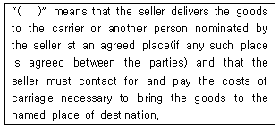
- CFR
- FCA
- CIP
- FOB
- CIF
(정답률: 16%)
118. ( )에 해당하는 특허보세구역의 명칭은?
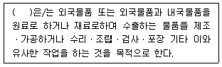
- 보세창고
- 보세공장
- 보세건설장
- 보세전시장
- 보세판매장
(정답률: 49%)
119. 항공화물 지연(delay) 사고의 하나로, 화물이 하기되어야 할 지점을 지나서 내려진 경우를 뜻하는 용어는?
- shortshipped
- offloaded by error
- overcarried
- shortlanded
- cross labelled
(정답률: 53%)
120. ( )에 들어갈 클레임 해결 방법은?
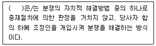
- 소송
- 중재
- 조정
- 화해
- 청구권의 포기
(정답률: 48%)